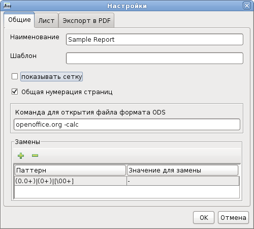
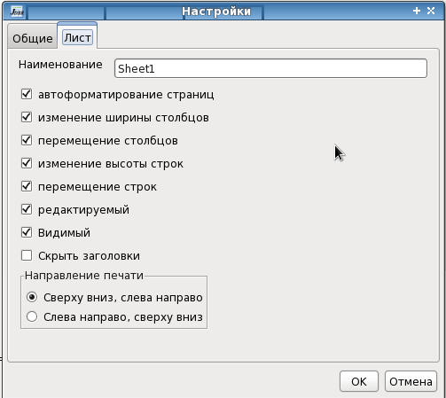
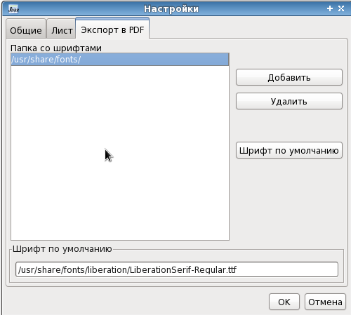

Свойства отчета
Диалог свойств отчета вызывается из меню Файл |
Свойства.
На вкладке Общие находятся
общие параметры отчета.
Наименование - наименование
отчета которое отображается в заголовке окна отчета.
Шаблон - имя шаблона из
которого сформирован отчет (если есть).
Показывать сетку - показать
(скрыть) границы ячеек отчета.
Общая нумерация страниц - при
установке нумерация страниц будет сквозная для всех листов отчета,
иначе для каждого листа нумерация страниц будет начинаться с 1.
Команда для открытия файла -
содержит команду для открытия отчета в электронной таблице. Отчет
конвертируется и открывается в указанной программе по нажатию кнопки  .
.
Замены - таблица замен. Если
ячейка помечена для замены, то при формировании отчета значения в
ячейке заменяются по правилам из таблицы замен.

На вкладке Лист
устанавливаются свойства для текущего выбранного листа.
Наименование - наименование
листа, будет отображаться на вкладке листа.
Автоформатирование страниц -
разбиение на страницы будет происходить автоматически. При изменении
высоты строк, перемещении, удалении и вставке строк страницы будут
форматироваться заново. Соответственно будут переноситься заголовки и
итоги страницы.
Изменение ширины столбцов -
разрешает пользователю изменять ширину столбцов.
Перемещение столбцов -
разрешает пользователю перемещение столбцов.
Изменение высоты строк -
разрешает пользователю изменять высоту строк.
Перемещение строк - разрешает
пользователю перемещать строки.
Редактируемый - разрешает
(запрещает) редактирование ячеек листа.
Видимый - показывает (скрывает)
лист.
Скрыть заголовки - скрывает
заголовки столбцов и строк.
Направление печати -
очередность печати и нумерации страниц на листе при превышении ширины
одной страницы.

Вкладка Экспорт в PDF.
Появляется только при подключении библиотеки iText.
Содержит путь к шрифтам которые могут встраиваться в PDF документ, и
шрифт используемый по умолчанию в PDF документе.
